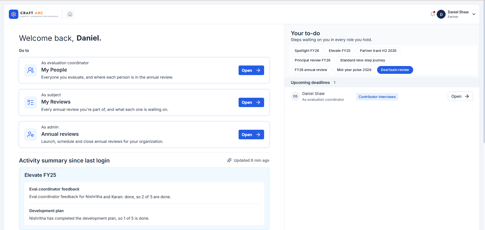
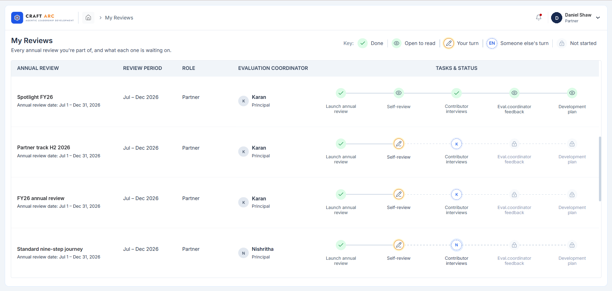
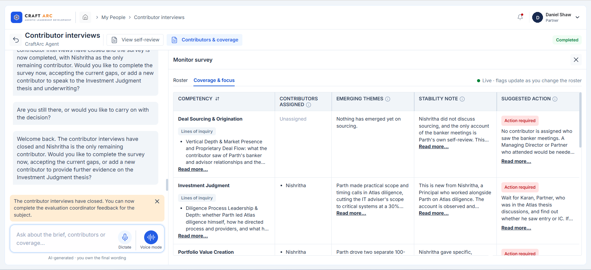
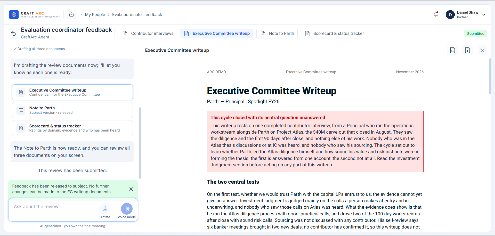
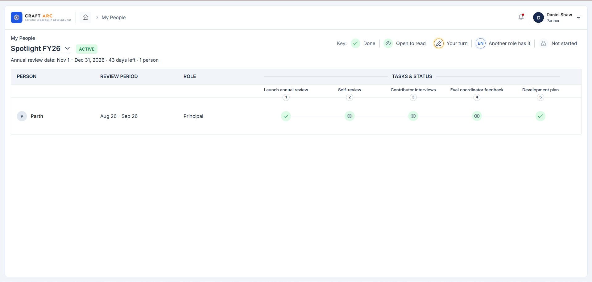

Evidence, graded
Every fact carries its source: directly observed, hearsay or third party.
Agentic leadership development for private equity
CraftArc runs your own competency framework as a review cycle. An AI coach interviews each principal, MD and partner, and the people who work with them. It grades the evidence for every competency and drafts the write-ups your evaluation coordinator signs off.
Live with the senior deal team of a mid-tier private equity firm, on a 24-month licence.
Why we built it
The firm had done the hard part. Its COO had written down, on one page, what a great senior deal professional does.
The team then spent 60 to 100 hours of senior time trying to make a general AI assistant run reviews on that framework. They wrote about 350 lines of instructions. The assistant could not hold the framework, and what the team built could not be shared. So they stopped.
A framework on paper cannot interview anyone, gather evidence or write a review. It needs a system that does all three and stays true to the framework.
That firm now runs its senior deal team on CraftArc.
Before your next cycle
How it works
Everything specific to your firm, from roles to competencies to steps, is written in plain English. CraftArc adapts to it without code.
Step 1
Your administrator launches, schedules and closes each annual review. Everyone gets one home that shows what changed since their last visit and what is waiting on them.

Step 2
An AI coach interviews each person against your competencies, by voice or text. It maps each answer to a competency as they talk, asks for whatever is missing and writes the summary for review.
People can nominate their contributors during the same conversation.

Step 3
The evaluation coordinator designs the survey with the agent: the central questions, who to ask and what each person saw. Contributors then give anonymous, AI-led interviews, and every fact is graded as directly observed, hearsay or third party.
Before the interviews close, the agent checks coverage for every competency and flags the gaps.

Step 4
The agent drafts the Executive Committee writeup, the note to the person and the scorecard. If the evidence cannot answer a question, the writeup says so at the top.
Your evaluation coordinator owns the final wording.

Step 5
Goals come from the evaluator's write-up, so each person leaves the cycle with a plan tied to the evidence. The evaluation coordinator sees where every person stands across all five steps.

What a general AI assistant cannot do
Every fact carries its source: directly observed, hearsay or third party.
The agent warns you when no contributor has spoken to a competency, while there is still time to ask someone.
When the evidence cannot answer a question, the writeup says so first, before anyone acts on it.
The coach gives each person one chance to explain and never nags. It asks once or twice, then lets them go.
Only the person and their evaluation coordinator see the self-review. Contributor interviews are anonymous, and transcripts are stored securely.
People talk on one side of the screen and watch the working document fill in on the other.
Proof
Live today
Principals, MDs and partners take part, on a 24-month licence. The firm tried the do-it-yourself AI route first.
Built with practitioners
We built CraftArc with the COO who designed that firm's framework. Eight to ten client interviews shaped how each competency is weighted and probed.
Who built it
Dash worked at McKinsey, Microsoft and Siemens, and founded AgenticPM, which builds AI agents for private equity deal teams. CraftArc follows how the best management consulting firms groom and select their leaders.
The offer
Compare that with the 60 to 100 hours of senior time one firm spent on a do-it-yourself attempt that it then abandoned.
FAQ
It does not decide alone. The interviews gather graded facts, and your evaluation coordinator forms the view with the agent, which maps each example to the competencies in your framework.
Yes. Everything specific to your firm is written in plain English, including roles, competencies and steps, so CraftArc adapts to it without code.
One firm tried. It spent 60 to 100 hours of senior time and wrote about 350 lines of instructions, then gave up. The assistant could not hold the framework, and the work could not be shared.
The coach is conversational and never nags. If someone does not want to answer, it asks once or twice and then lets them go.
Only you and your evaluation coordinator.
Yes, and the transcripts are stored securely.
CraftArc shows each leader's progress on their craft, and it feeds whichever review process you already run.
An internal business champion, supported by our implementation consultant.
One flat annual fee covers every participant and evaluator, with no build-out fee. We quote it after a short call about your team and your framework.
Plan next year's cycle now
If your next review cycle starts in the new year, this is the quarter to plan it. Bring your competency framework, and we will walk you through a full cycle on sample data and show you how yours would run.
Every launch includes a hands-on implementation consultant, so we take on a small number of firms at a time.
We will email you to arrange a time. Have your competency framework to hand, or tell us if you are still drafting one.